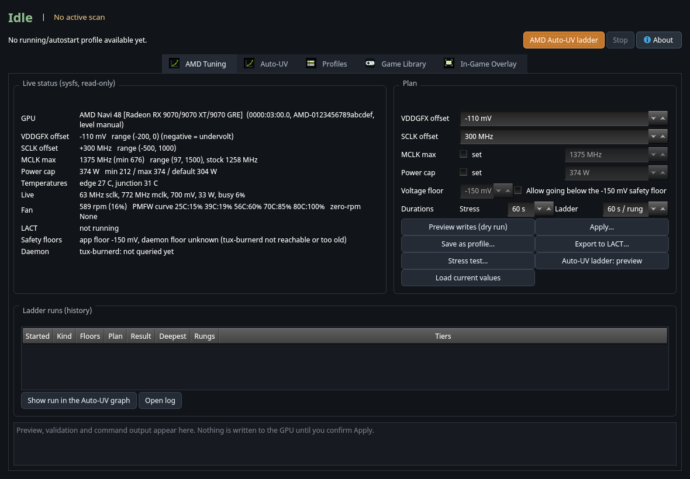
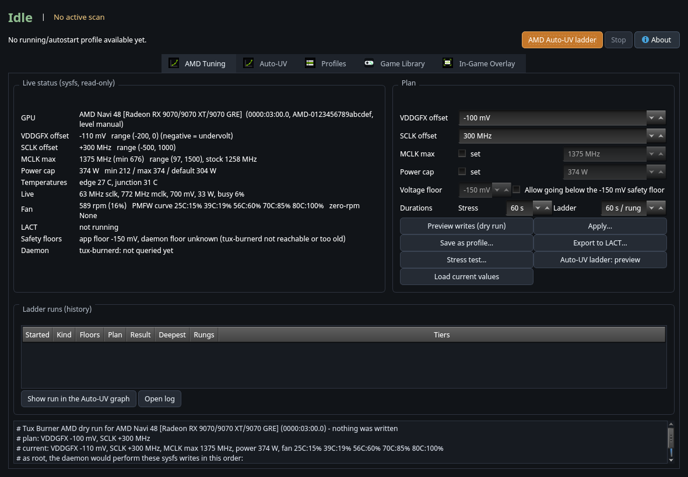
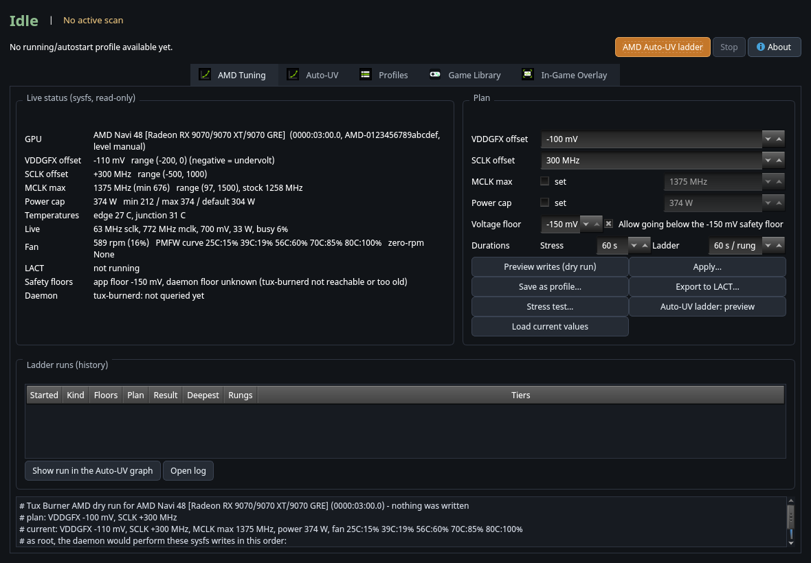
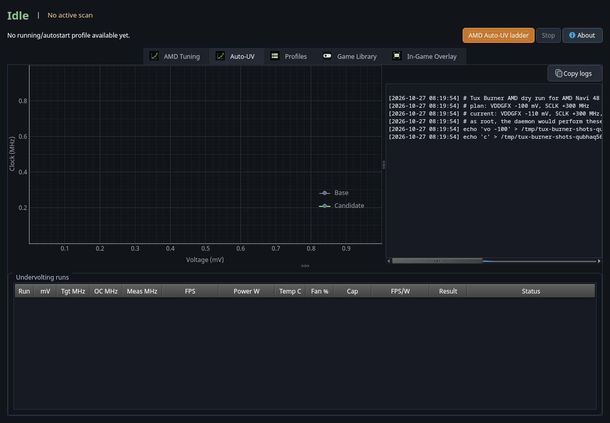
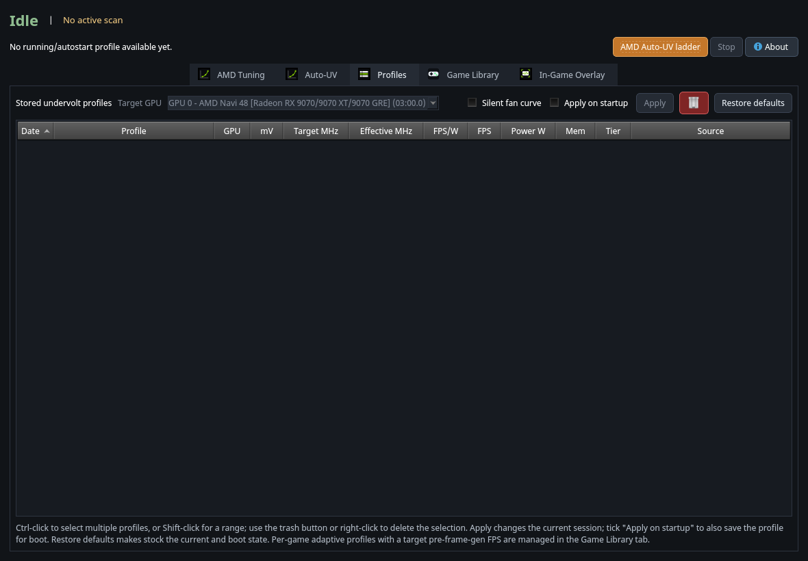
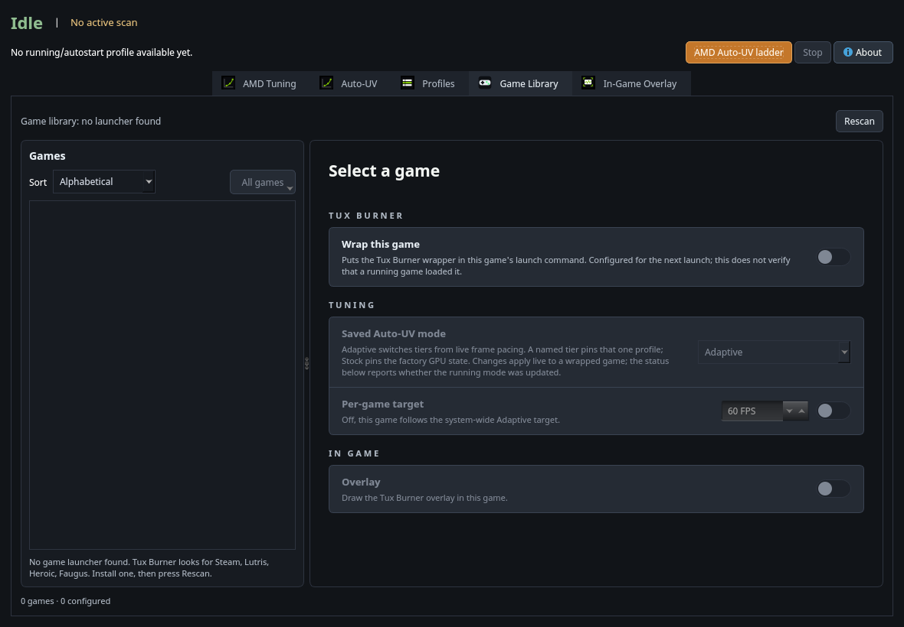
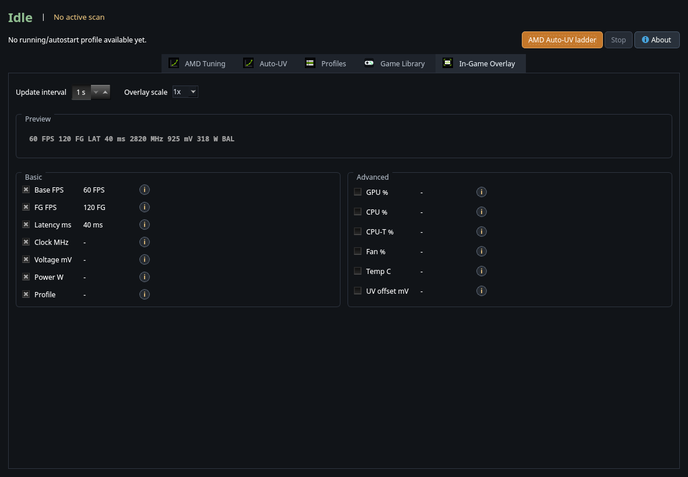
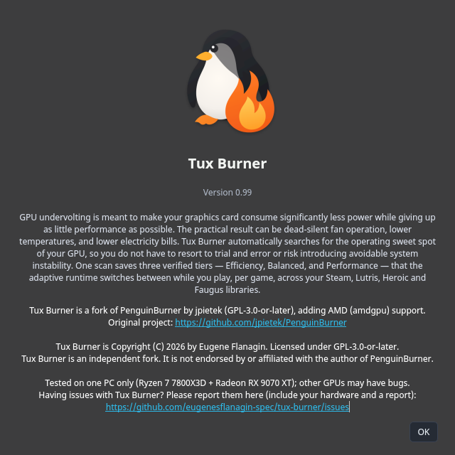

User guide, command-line reference and glossary · version 0.99
Tux Burner is Copyright (C) 2026 by Eugene Flanagin. Licensed under GPL-3.0-or-later.
Tux Burner is a fork of PenguinBurner by jpietek (https://github.com/jpietek/PenguinBurner), GPL-3.0-or-later.
It is an independent fork, not endorsed by or affiliated with the author of PenguinBurner.
Tested on one PC only (Ryzen 7 7800X3D + Radeon RX 9070 XT): other GPUs may have bugs.
Version 0.99. Package tux-burner. Programs:
tux-burner (also tburn),
tux-burner-cli (also tburn-cli), and the root
service tux-burnerd.
Tux Burner lets you run your graphics card on less power with the same speed (undervolting), or a little faster (overclocking), and saves the settings as profiles. It works on AMD Radeon cards through the amdgpu driver (tested on a Radeon RX 9070 XT) and on NVIDIA cards through the original PenguinBurner code.
Credit. Tux Burner is Copyright (C) 2026 by Eugene Flanagin. Licensed under GPL-3.0-or-later.
Tux Burner is a fork of PenguinBurner by jpietek (https://github.com/jpietek/PenguinBurner), GPL-3.0-or-later. The windows, the Auto-UV search, the adaptive per-game runtime, the Game Library, the overlay and the daemon's profile engine are the upstream author's work. This fork adds the AMD backend and renames the program. All upstream licence notices are kept.
Not affiliated. Tux Burner is an independent fork. It is not endorsed by or affiliated with the author of PenguinBurner. Please report Tux Burner problems to https://github.com/eugenesflanagin-spec/tux-burner/issues, not to upstream.
Tested on one PC. Tux Burner's AMD side was tested only on a Ryzen 7 7800X3D with a Radeon RX 9070 XT. Other AMD generations, and the NVIDIA backend in this fork, may have bugs. If you find one, please open an issue with your hardware and the report.
Other pages:
A graphics card is given more voltage than most chips need. Undervolting lowers the voltage a little. The card then uses less power, runs cooler and quieter, and (if you did not go too far) is just as fast. Go too far and the card becomes unstable: the picture glitches, the driver resets, or the whole PC freezes.
Tux Burner does three jobs:
On an AMD card there is one voltage knob (a global offset in millivolts), one core-clock offset, a memory-clock limit, a power cap and a fan curve. On NVIDIA there is a whole voltage/frequency curve, which is why the NVIDIA search is more complicated.
--override-lact.SECURITY.md.From a release (see the Releases page of the repository):
sudo pacman -U tux-burner-0.99-1-x86_64.pkg.tar.zstThe package provides and conflicts with
penguin-burner and penguin-burner-amd and
replaces penguin-burner-amd, so it takes over
from either. Build it yourself from the source tree:
git clone https://github.com/eugenesflanagin-spec/tux-burner
cd tux-burner
git checkout v0.99 # or the branch you want
packaging/build-arch-local.sh
sudo pacman -U /path/shown/at/the/end/tux-burner-0.99-1-x86_64.pkg.tar.zstEach release also has a .deb and a .rpm
file, a SHA256SUMS file and this guide as a PDF. These are built by the
release workflow; they have been tried less than the Arch package, so
please report problems.
sudo apt install ./tux-burner_0.99-1_amd64.deb # Debian / Ubuntu
sudo dnf install ./tux-burner-0.99-1.x86_64.rpm # FedoraCheck the download first:
sha256sum -c SHA256SUMS --ignore-missing.
amdgpu.ppfeaturemask=0xffffffff is needed to see
pp_od_clk_voltage). Without it Tux Burner can show values
but cannot change them.rocm-opencl-runtime, or Mesa's rusticl).vulkan-radeon).Changing GPU settings needs root. Tux Burner does that with one small
root service, tux-burnerd. Install it once, as your normal
user:
tburn-cli --install-systemd-serviceIt asks for your password (pkexec or sudo), installs and starts
tux-burnerd.service. From then on the window and the
command line talk to it over a local socket with no more password
prompts. A fresh service applies nothing on start: it
waits for you.
tux-burner).
tburn-cli --amd-status
If the page says "daemon floor unknown (tux-burnerd not reachable)", the root service is not running. Install it as shown above.
The top bar shows the state (Idle / running), a one-line message, the big AMD Auto-UV ladder button, Stop, and About. The tabs are AMD Tuning, Auto-UV, Profiles, Game Library and In-Game Overlay.
Live status (read from sysfs every 2 seconds, read-only):
| Row | Meaning |
|---|---|
| GPU | Name, PCI address and an id derived from the card. |
| VDDGFX offset | The voltage offset in mV now, and the range the driver allows. Negative means undervolt. |
| SCLK offset | Core clock offset in MHz, and its range. |
| MCLK max | The memory clock ceiling, and the stock value for comparison. |
| Power cap | The power limit in watts, with the minimum, maximum and default the card reports. |
| Temperatures | Edge and junction (hot spot). The fan curve uses the junction. |
| Live | Core clock, memory clock, voltage, power and busy percent right now. |
| Fan | Fan speed and the card's 5-point fan curve. |
| LACT | Whether LACT is running and what it has configured. |
| Safety floors | The app floor and the daemon floor (they must match). |
| Daemon | What tux-burnerd reports. |
Plan (what you want to set):
| Control | What it does |
|---|---|
| VDDGFX offset | Voltage offset in mV. Cannot go below the safety floor. |
| SCLK offset | Core clock offset in MHz. |
| MCLK max (set) | Tick to set an absolute memory clock ceiling. |
| Power cap (set) | Tick to set the power limit in watts. |
| Voltage floor / Allow going below | Unlocks the floor spin box. A warning appears. See safety floors. |
| Durations | Seconds for the Stress test, and seconds per rung for the ladder. |

Buttons:
| Button | What it does |
|---|---|
| Preview writes (dry run) | Shows the exact writes. Writes nothing. |
| Apply... | After a confirmation, writes the plan through the root service. With LACT running you first choose Export to LACT, Override LACT or Cancel. |
| Save as profile... | Saves the plan as a Tux Burner profile (see Profiles). |
| Export to LACT... | Writes the plan as a LACT configuration block you can paste into LACT's config. |
| Stress test... | Runs the OpenCL stress workload for the chosen seconds, after a confirmation. Heavy load. |
| Auto-UV ladder: preview | The first click previews the rungs; the second asks for confirmation and runs. |
| Load current values | Puts the card's present values back into the editor. |
Ladder runs (history): every ladder run (from the window or the command line) is listed with its settings, floors, result and deepest stable rung. Show run in the Auto-UV graph plots it; Open log opens the log.
The upstream NVIDIA Auto-UV page, with the live Clock-vs-Voltage graph. On AMD the graph shows each ladder rung's operating point, coloured by result. The Start button is replaced by AMD Auto-UV ladder.

Saved profiles, including AMD ones: name, tier, the AMD columns
(voltage offset, core offset, memory, power), apply, rename, export to
LACT, delete, and Restore Defaults. On AMD, Restore
Defaults offers Return to LACT's settings (asks
lactd to re-apply its profile; no restart) or Driver
stock defaults (through the root service, with before/after
readback).

The upstream per-game feature: Steam, Lutris, Heroic and Faugus games, each with its own tuning and overlay switch. Per-game profile switching was written for NVIDIA; on AMD only saved AMD profiles can be applied, and this part has had less testing.

The upstream Vulkan overlay layer (frame rate, GPU numbers, optional latency). It is independent of the AMD tuning code.

About shows the version, the fork notice, the upstream link and where to report problems.

A floor is the deepest VDDGFX offset that will be allowed. There are two, on purpose, so that a bug in one cannot cause a deep undervolt:
| Floor | Where it lives | Default |
|---|---|---|
| App floor | The window and tburn-cli (plan checks, the
ladder). |
-150 mV |
| Daemon floor | The root service. It refuses any deeper write no matter who asks. | -150 mV |
How they behave:
--amd-voltage-floor MV --allow-below-floor, or tick
Allow going below the safety floor in the window)
and lower the daemon floor
(tburn-cli --amd-set-daemon-floor MV --allow-below-floor,
or confirm the window's dialog, which does it for you). Until both
match, Apply and the ladder are blocked in the window, so no
rung is refused halfway and mistaken for a failure./etc/tux-burner/amd-vddgfx-floor-mv. The environment
variable TUX_BURNERD_AMD_VDDGFX_FLOOR_MV in the service's
unit pins it instead (then the file is ignored and the window says
so).--amd-set-daemon-floor default) to return to -150 mV.The floors limit the voltage offset only. The SCLK offset, memory clock and power cap are always checked against the ranges the driver reports.
LACT is a well-known Linux control panel for AMD
GPUs. If its service (lactd) is running, LACT owns
the GPU's tuning and its fan curve, and it re-applies its own
settings from time to time.
What Tux Burner does about it:
lact process runs) and shows the result and LACT's
configured values in the window.--amd-apply and --amd-auto-uv
refuse while LACT runs, unless you add
--override-lact. In the window, Apply then offers
Export to LACT (the preferred way), Override LACT
(with a warning) or Cancel.--amd-export-lact writes your plan as a LACT
gpus: block (voltage_offset, gpu_clock_offsets,
max_memory_clock, power_cap and a curve of up to five points) so LACT
can carry the setting. Put it in LACT's config yourself.lactd on a live desktop to pick
up a change. Use LACT's own profile switching
(lact cli profile set <name>) or reboot.With --override-lact, LACT's own settings come back the
next time LACT applies them. Restore LACT's values with Return to
LACT's settings (Profiles > Restore Defaults) or
tburn-cli --amd-restore lact.
On NVIDIA, Auto-UV searches a whole curve. On AMD there is a single voltage offset, so the search is a ladder:
--amd-auto-uv-step).--amd-auto-uv-rung-seconds). The workload checks its own
results; a wrong answer, a driver error, a hang or a crash fails the
rung.--amd-auto-uv-margin), becomes three saved profiles:
Efficiency (stock power cap), Balanced
(the cap that was in force when the scan started) and
Performance (your core offset and the maximum cap).
Suggested voltages are never deeper than -110 mV.Use Auto-UV ladder: preview (or
--amd-auto-uv --amd-dry-run) first: it prints the planned
range, for example +0 -> -150 mV, the number of rungs
and the worst-case time. The ladder is heavy sustained load.
In the window, a live Clock-vs-Voltage plot shows
each rung's measured operating point (voltage from hwmon against core
clock), coloured by result, with the current rung highlighted. Each run
is saved as
~/.config/TuxBurner/amd-runs/amd-run-*.json.
Failure types shown in the history: OpenCL mismatch, driver error, hang timeout, process crash, setup error, and "apply refused" (by the floor, the driver range or LACT).
A profile is a saved plan. AMD profiles hold the VDDGFX offset, the core offset, the memory ceiling and the power cap.
tburn-cli --amd-plan vo=-90 sclk=0 power=304 --amd-save-profile quiet --amd-profile-tier efficiency.tburn-cli --restore-stock.tburn-cli and tux-burner-cli are the same
program. The full list is in CLI-REFERENCE.md,
tburn-cli --help and man tburn-cli. The AMD
part, in short:
tburn-cli --version
tburn-cli --amd-status # read-only
tburn-cli --amd-plan vo=-90 sclk=300 mclk=1375 power=374 # preview only
tburn-cli --amd-plan vo=-90 --amd-apply --amd-dry-run # preview of an apply
tburn-cli --amd-plan vo=-90 --amd-apply # write (refused if LACT runs)
tburn-cli --amd-plan vo=-90 --amd-apply --override-lact # write although LACT runs
tburn-cli --amd-plan vo=-90 --amd-export-lact ~/lact-amd.yaml
tburn-cli --amd-stress 60 # OpenCL load; no tuning writes
tburn-cli --amd-auto-uv --amd-dry-run # ladder plan
tburn-cli --amd-auto-uv # run the ladder (heavy load)
tburn-cli --amd-restore lact # or: stock
tburn-cli --daemon-statuspower= takes watts or a percent of the default cap
(power=110%). fan= takes up to five
TEMP:PERCENT points; they are shown in the plan, but
applying never writes a fan curve (fan control is refused while LACT
runs). zero_rpm=on|off is also accepted.
| Path | What |
|---|---|
~/.config/TuxBurner/ |
Your profiles, ladder run history (amd-runs/), debug
logs, settings (tux_burner.toml). |
/etc/tux-burner/amd-vddgfx-floor-mv |
The daemon's safety floor (root-owned). |
/var/lib/tux-burner/ |
The daemon's saved state (boot profile, energy counters). |
/var/opt/tux-burner/libexec/tux-burnerd |
The installed copy of the daemon binary. |
/run/tux-burnerd.sock |
The daemon socket. |
/etc/systemd/system/tux-burnerd.service |
The service unit. |
Environment variables: TUX_BURNER_AMD_VDDGFX_FLOOR_MV
(app floor), TUX_BURNERD_AMD_VDDGFX_FLOOR_MV (daemon floor,
in the unit), TUX_BURNER_HOME (use another home
directory).
Your data is copied, never moved or deleted:
/etc/penguin-burner to
/etc/tux-burner and /var/lib/penguin-burner to
/var/lib/tux-burner if the new ones do not exist yet.~/.config/PenguinBurner to ~/.config/TuxBurner
(profiles, run history, settings; penguin_burner.toml
becomes tux_burner.toml)./etc/penguin-burner/amd-vddgfx-floor-mv if the new floor
file does not exist.The old service
(penguin-burnerd.service) is not touched by the package.
Switch over yourself, once, so two daemons never run together:
sudo pacman -U tux-burner-0.99-1-x86_64.pkg.tar.zst
sudo systemctl disable --now penguin-burnerd.service
sudo rm -f /etc/systemd/system/penguin-burnerd.service
sudo tburn-cli --install-systemd-service
tburn-cli --daemon-status
tburn-cli --amd-statusCheck that --amd-status shows your safety floor (and, if
you had lowered it, the same value). Once everything looks right you may
remove the old directories (/etc/penguin-burner,
/var/lib/penguin-burner,
/var/opt/penguin-burner,
~/.config/PenguinBurner).
| Problem | What to try |
|---|---|
| "daemon floor unknown (tux-burnerd not reachable)" | Install the service:
tburn-cli --install-systemd-service. Check
systemctl status tux-burnerd. |
| The values cannot be changed | OverDrive is off. Check that
/sys/class/drm/card*/device/pp_od_clk_voltage exists. Many
distributions need amdgpu.ppfeaturemask=0xffffffff on the
kernel command line. |
| A write is refused because LACT is running | LACT owns the GPU. Export to LACT, or use
--override-lact knowing LACT will re-apply its values. |
| Apply or the ladder is greyed out | The app floor and the daemon floor differ. Use the window's Safety floors row to sync them. |
| "apply refused by the floor" | The value is deeper than the floor. Raise the floor on purpose (both floors), or pick a shallower value. |
| Stress test says no OpenCL device | Install an OpenCL driver (rocm-opencl-runtime or Mesa
rusticl) and ocl-icd. |
| The screen freezes during a ladder | That offset was too deep. After the reset, run the ladder again: the marker file makes Tux Burner treat that offset as unsafe. Go back to LACT's values or a shallower offset. |
| After switching from PenguinBurner nothing is listed | See Moving from
PenguinBurner. Check ~/.config/TuxBurner/. |
| The Game Library or overlay does nothing | Those parts are upstream NVIDIA-era features and are less tested on AMD. Please report what you see. |
When you report a problem, include tburn-cli --version,
tburn-cli --amd-status and
tburn-cli --daemon-status. Remove your
host name, IP addresses and the GPU serial/unique id before posting.
sudo tburn-cli --uninstall-systemd-service # stops and removes the service
sudo pacman -R tux-burner # or apt remove / dnf removeYour files in ~/.config/TuxBurner/ are kept; delete them
if you want. The GPU keeps whatever was last applied until the next
reboot or until you restore it
(tburn-cli --amd-restore stock).
CREDITS.md and CHANGELOG.md.Tux Burner is a fork of PenguinBurner. Changes are Copyright (C) 2026 by Eugene Flanagin. Licensed under GPL-3.0-or-later.
See GLOSSARY.md. The short version:
tux-burnerd.Version 0.99. Programs: tburn-cli and
tux-burner-cli (the same program). tux-burner
and tburn start the window.
Tux Burner is Copyright (C) 2026 by Eugene Flanagin. Licensed under GPL-3.0-or-later. It is a fork of PenguinBurner by jpietek (GPL-3.0-or-later). Not endorsed by or affiliated with the author of PenguinBurner.
Plain words first: the commands that only read are
--version, --help, --amd-status,
--daemon-status, --list-auto-uv-profiles, and
any --amd-plan ... without
--amd-apply (that one prints what would be written). The
commands that write to the GPU are
--amd-apply, --amd-auto-uv,
--restore-stock, --amd-restore stock,
--daemonize and the upstream Auto-UV scan.
--amd-stress and --amd-auto-uv also put heavy
sustained load on the GPU. Write commands go through the root service
tux-burnerd, and are refused while LACT runs unless you add
--override-lact.
| Option | What it does |
|---|---|
--amd-status |
Show ranges, live values, fan curve and LACT state. Read-only. |
--amd-plan KEY=VALUE ... |
Describe a plan: vo=<mV>
sclk=<MHz> mclk=<MHz>
power=<W> or <NN%>
fan=T:P,T:P,... (up to 5 points) `zero_rpm=on |
--amd-dry-run |
With --amd-apply, --amd-save-profile,
--amd-auto-uv or --amd-stress: show, change
nothing. |
--amd-apply |
Write the undervolt, core clock, memory clock and power cap now (checked against the live driver ranges and both floors). Fan curves are never written by apply, and fan control is refused while LACT runs. |
--amd-save-profile NAME |
Save the plan as a Tux Burner profile (marked unverified). |
--amd-profile-tier T |
Tier for the saved profile: efficiency,
balanced, performance. |
--amd-export-lact [PATH] |
Write the plan as a LACT config fragment (to the screen without PATH). |
--amd-stress SECONDS |
OpenCL stress workload. Heavy load. No tuning writes. |
--amd-auto-uv |
The ladder. Heavy load. Options: --amd-auto-uv-start MV
(0), --amd-auto-uv-step MV (10),
--amd-auto-uv-floor MV (driver minimum, never below the app
floor), --amd-auto-uv-rung-seconds S (60),
--amd-auto-uv-margin MV (20). |
--amd-voltage-floor MV |
The app's floor (default -150). Deeper needs
--allow-below-floor. |
--allow-below-floor |
Confirms a floor deeper than -150 mV. |
--amd-set-daemon-floor MV|default |
Set the root service's own floor. |
--amd-restore lact|stock |
Give the GPU back to LACT, or reset to driver defaults. |
--override-lact |
Write although LACT is running. |
--daemon-status |
Print the status of the Tux Burner hardware daemon and exit. Read-only. |
--install-systemd-service |
Install and start the persistent tux-burnerd systemd
service (asks for root). |
--uninstall-systemd-service |
Stop and remove that service
(--deinstall-systemd-service is the same). |
--help outputThis is the output of tburn-cli --help, kept here so the
guide matches the program. The upstream sections (Auto-UV, Steam overlay
setup, Runtime and daemon, Runtime tuning, Advanced/debug) describe the
NVIDIA-era features; many of them are not used on AMD.
usage: tburn-cli [options]
Tux Burner: GPU undervolting and overclocking for Linux (AMD amdgpu
and NVIDIA). A fork of PenguinBurner by jpietek (GPL-3.0-or-later).
Run Auto-UV scans, manage the saved Efficiency/Balanced/Performance
profiles, drive the adaptive daemon runtime, and set up the Steam
launch wrapper and in-game overlay.
options:
-h, --help show this help message and exit
--version Print the Tux Burner version and exit
Auto-UV:
--auto-uv-voltage-scan
Discover a stable fixed-clock undervolt from the
live/default NVIDIA V/F curve, step the lock voltage
down through real editable VF bins, and verify
candidates with Q2RTX plus CUDA load. Resume an
unfinished scan automatically when the GPU and
settings match
--list-auto-uv-profiles
List saved Auto-UV profiles and exit; use a shown
profile id or candidate id with --auto-uv-profile.
--assign-auto-uv-tier PROFILE TIER
Assign a saved verified Auto-UV profile to an adaptive
tier and exit. PROFILE accepts the same selectors as
--auto-uv-profile; TIER is efficiency, balanced,
performance, or none.
--auto-uv-mode MODE Auto-UV preset path. efficiency uses one 2-bin tail
sweep to the voltage floor; balanced uses the 2-bin
tail sweep; performance uses the 2-bin tail sweep plus
Auto-OC.
--auto-uv-q2rtx-resolution {auto,1080p,1440p,4k}
Q2RTX resolution for the complete Auto-UV scan and
final verification. Default: auto (4K on desktop RTX
4080/Super, 4090, 5070 Ti, 5080 and 5090, plus RTX
4090/5090 Laptop; 1080p on all others, including
unknown GPUs). Use 1080p to compare a lighter
rendering workload. CUDA is unchanged.
--auto-uv-retry-after-freeze
CLI only; off by default. On an explicit scan resume
after a hard freeze, allow retrying the interrupted
clock climb at higher voltage. May require further
reboots. Keeps the failed-point blacklist, predicted
stability margins, floor caution and voltage headroom.
--auto-uv-min-voltage-mv mV
Lowest voltage for the selected undervolt point.
Overrides the detected GPU table floor and the
percentage-drop fallback. Lower-voltage curve
transitions are checked separately at their lower
clocks.
--auto-uv-memory-offset-mhz MHz
Memory clock V/F offset to apply during Auto-UV and
save with the final profile. NVML offsets are in
transfer-rate units (MT/s): the realized memory clock
rises by half the value. Clamped to the driver-
reported limit for the GPU (fallback 0..2000 when NVML
exposes no range).
--auto-uv-power-limit-w W
Power limit in watts to apply during Auto-UV and save
with the final profile. The UI clamps this to the
selected GPU's NVML minimum and maximum power-limit
range.
--auto-uv-boost {standard,aggressive}
CLI-only boost headroom for every scanned tier:
Standard Boost (default) uses 2 rising tail bins (+30
MHz nominal); Aggressive Boost uses 4 (+60 MHz
nominal). Does not enable freeze retries.
--auto-uv-tail-rise-bins N
How many voltage bins can the voltage curve rise above
the locked undervolt point. Defaults to 2 for every
tier; 0 makes the tail flat.
--auto-uv-final-verification-s SECONDS
Final verification soak per tier for this scan (every
stage of an adaptive 3-in-1 run uses the same
duration). Default 300 seconds; equivalent to
TUX_BURNER_AUTO_UV_FINAL_SECONDS.
--auto-uv-efficiency-power-limit-w W
Full-scan override: the Efficiency tier's power limit
in watts, applied for that tier's baseline, descent,
final verification, and saved profile. Only meaningful
with --auto-uv-mode adaptive.
--auto-uv-efficiency-memory-offset-mhz MHz
Full-scan override: the Efficiency tier's memory V/F
offset (NVML transfer-rate units, like --auto-uv-
memory-offset-mhz), applied for that tier's descent
and saved with its profile. Only meaningful with
--auto-uv-mode adaptive.
--auto-uv-efficiency-target-voltage-mv mV
Custom Efficiency voltage target for a single-tier or
full scan. Defaults use the GPU table. Clock ranges:
Efficiency -15% to Balanced; Balanced from Efficiency
to Performance; Performance from Balanced to
Performance +5%. Change only if you understand GPU
tuning.
--auto-uv-efficiency-target-clock-mhz MHz
Custom Efficiency clock target for a single-tier or
full scan. Defaults use the GPU table. Clock ranges:
Efficiency -15% to Balanced; Balanced from Efficiency
to Performance; Performance from Balanced to
Performance +5%. Change only if you understand GPU
tuning.
--auto-uv-balanced-power-limit-w W
Full-scan override: the Balanced tier's power limit in
watts, applied for that tier's baseline, descent,
final verification, and saved profile. Only meaningful
with --auto-uv-mode adaptive.
--auto-uv-balanced-memory-offset-mhz MHz
Full-scan override: the Balanced tier's memory V/F
offset (NVML transfer-rate units, like --auto-uv-
memory-offset-mhz), applied for that tier's descent
and saved with its profile. Only meaningful with
--auto-uv-mode adaptive.
--auto-uv-balanced-target-voltage-mv mV
Custom Balanced voltage target for a single-tier or
full scan. Defaults use the GPU table. Clock ranges:
Efficiency -15% to Balanced; Balanced from Efficiency
to Performance; Performance from Balanced to
Performance +5%. Change only if you understand GPU
tuning.
--auto-uv-balanced-target-clock-mhz MHz
Custom Balanced clock target for a single-tier or full
scan. Defaults use the GPU table. Clock ranges:
Efficiency -15% to Balanced; Balanced from Efficiency
to Performance; Performance from Balanced to
Performance +5%. Change only if you understand GPU
tuning.
--auto-uv-performance-power-limit-w W
Full-scan override: the Performance tier's power limit
in watts, applied for that tier's baseline, descent,
final verification, and saved profile. Only meaningful
with --auto-uv-mode adaptive.
--auto-uv-performance-memory-offset-mhz MHz
Full-scan override: the Performance tier's memory V/F
offset (NVML transfer-rate units, like --auto-uv-
memory-offset-mhz), applied for that tier's descent
and saved with its profile. Only meaningful with
--auto-uv-mode adaptive.
--auto-uv-performance-target-voltage-mv mV
Custom Performance voltage target for a single-tier or
full scan. Defaults use the GPU table. Clock ranges:
Efficiency -15% to Balanced; Balanced from Efficiency
to Performance; Performance from Balanced to
Performance +5%. Change only if you understand GPU
tuning.
--auto-uv-performance-target-clock-mhz MHz
Custom Performance clock target for a single-tier or
full scan. Defaults use the GPU table. Clock ranges:
Efficiency -15% to Balanced; Balanced from Efficiency
to Performance; Performance from Balanced to
Performance +5%. Change only if you understand GPU
tuning.
--auto-oc-target-voltage-mv mV
Performance-mode Auto-OC voltage cap in mV. Overrides
the detected GPU table target. Defaults are optimized
for most GPUs; change only if you understand
voltage/frequency tuning and instability risks.
--auto-oc-target-clock-mhz MHz
Performance-mode Auto-OC core clock cap in MHz.
Overrides the detected GPU table target. Defaults are
optimized for most GPUs; change only if you understand
voltage/frequency tuning and instability risks.
Steam overlay setup:
--set-steam-overlay-launch APPID
Write the Tux Burner native-overlay launch option for
a Steam app id and exit. The write is verified so
running Steam rewrites are reported instead of treated
as success.
Runtime and daemon essentials:
--silent-fan-curve Runtime/daemon only: opt in to Tux Burner manual fan-
curve control; by default fan control is left to the
GPU driver. Auto-UV scans write a suggested fan curve
automatically when safe.
--daemonize Apply normal runtime through the running tux-burnerd
service after an Auto-UV final curve exists. Auto-UV
scans remain foreground-only.
--install-systemd-service
Install or update the Tux Burner daemon service:
refresh the daemon binary at /var/opt/tux-
burner/libexec, rewrite the unit, and restart it. With
profile options, also set the persistent boot profile;
without them, an existing boot profile is kept. Asks
for authorization (pkexec/sudo) when not run as root.
--uninstall-systemd-service, --deinstall-systemd-service
Stop and remove the persistent Tux Burner systemd
service. Asks for authorization (pkexec/sudo) when not
run as root.
--migrate-to-daemon-service
Install tux-burnerd.service and migrate an existing
legacy TuxBurner.service when possible. Asks for
authorization (pkexec/sudo) when not run as root.
--daemon-status Print Tux Burner hardware daemon status and exit.
--set-main-gpu GPU-UUID
On a multi-NVIDIA-GPU system, make a saved startup GPU
the daemon's main monitored GPU after boot.
--clear-main-gpu Clear the explicit Main GPU and restore last-saved-GPU
behavior.
--restore-stock Recovery: reset the GPU to stock now and make stock
the boot state through the running tux-burnerd
service. Saved profiles are kept. Works without the
GUI.
--auto-uv-profile AUTO_UV_PROFILE
Use an Auto-UV profile by profile id, candidate id,
JSON path, 'active', or 'latest' for daemon runtime,
systemd service runtime, and internal final
verification.
--adaptive-auto-uv Runtime/daemon only: allow Tux Burner to adapt between
saved Auto-UV profile tiers from base present-frame
p95 pacing. Requires at least one saved verified
profile tier. Target defaults to 60 FPS; override the
service env TUX_BURNER_ADAPTIVE_TARGET_FPS for 30, 50,
60, 120, etc.
--journal-hours N Hours of systemd journal history to suggest after
daemonizing; default 4.
Runtime tuning:
--config CONFIG Runtime config path to read defaults from
--gpu-index GPU_INDEX
Override the configured GPU index
Advanced/debug:
--debug-log Write a verbose diagnostic log next to the selected
config file under debug-logs/; with the default config
this is ~/.config/TuxBurner/debug-logs
AMD (amdgpu OverDrive) tuning:
Local AMD port. Reads come from sysfs; writes go through tux-burnerd. While LACT (lactd) runs it owns the GPU: writes need --override-lact.
--amd-status Print the AMD GPU's OverDrive ranges, live values, fan
curve and LACT state (read-only)
--amd-plan KEY=VALUE [KEY=VALUE ...]
Tuning plan: vo=<mV> (VDDGFX offset, negative =
undervolt), sclk=<MHz> offset, mclk=<MHz> max memory
clock, power=<W>|<NN%> cap, fan=T:P,T:P,... (max 5
points), zero_rpm=on|off. Alone it previews the exact
sysfs writes (dry run)
--amd-dry-run With --amd-apply/--amd-save-profile/--amd-auto-
uv/--amd-stress: show what would happen, change
nothing
--amd-apply Apply --amd-plan now through tux-burnerd (validated
against the live OD_RANGE)
--amd-save-profile NAME
Save --amd-plan as an (unverified) Tux Burner profile
the GUI and daemon can apply
--amd-profile-tier {efficiency,balanced,performance}
Tier to assign the saved AMD profile to
--amd-export-lact [PATH]
Write --amd-plan as a LACT config fragment (stdout
when PATH is omitted)
--amd-stress SECONDS Run the OpenCL brute-force stability workload
(sustained GPU load; no tuning writes)
--amd-auto-uv AMD Auto-UV: step the VDDGFX offset down rung by rung,
stress each rung, save three tiers
--amd-auto-uv-start MV
First rung (default 0 = stock)
--amd-auto-uv-step MV
Rung size in mV (default 10)
--amd-auto-uv-floor MV
Lowest offset to try (default: driver minimum)
--amd-auto-uv-rung-seconds S
Stress seconds per rung (default 60)
--amd-auto-uv-margin MV
Safety margin added to the deepest stable rung
(default 20)
--amd-voltage-floor MV
Deepest VDDGFX offset Tux Burner will plan, write or
sweep to (default -150 mV on this machine). Going
deeper also needs --allow-below-floor; the daemon
enforces its own floor (/etc/tux-burner/amd-vddgfx-
floor-mv)
--allow-below-floor Confirm an --amd-voltage-floor deeper than the default
-150 mV
--amd-set-daemon-floor MV|default
Set the DAEMON's VDDGFX safety floor (/etc/tux-
burner/amd-vddgfx-floor-mv, written by tux-burnerd) or
'default' to restore -150 mV. Values deeper than -150
also need --allow-below-floor. Without this the daemon
refuses deeper writes even if --amd-voltage-floor
allows them
--amd-restore {lact,stock}
Restore the AMD GPU: 'lact' asks lactd to re-apply its
current profile (lact cli profile set); 'stock' resets
OverDrive (sclk/mclk/voltage offsets), the power cap
and - unless LACT runs - the PMFW fan curve to driver
defaults through tux-burnerd, with readback
--override-lact Write even though LACT is running (LACT re-applies its
own settings on its next apply)0 success. Non-zero: a refused or failed operation (the
message says why). The OpenCL stress workload itself exits with 0 =
passed, 1 = setup error (no device, build failed), 3 = instability (a
wrong result), 4 = hang (the GPU stopped answering); the ladder reads
these to decide a rung's result.
Every technical word in the guide, in plain English.
Tux Burner is Copyright (C) 2026 by Eugene Flanagin. Licensed under GPL-3.0-or-later. It is a fork of PenguinBurner by jpietek.
| Word | Plain meaning |
|---|---|
| Adaptive runtime | An upstream feature: while you play, the daemon switches between your Efficiency, Balanced and Performance profiles depending on the frame rate. |
| amdgpu | The Linux kernel driver for AMD Radeon cards. Tux Burner talks to it
through files under /sys/class/drm/. |
| App floor | The deepest voltage offset the window and tburn-cli
allow. Default -150 mV. |
| Auto-UV | "Automatic undervolt": the search for a good voltage setting. On AMD it is the ladder. |
| Balanced | A tier: the power cap that was set when the scan started, with the found voltage. |
| Boot profile | A profile the root service applies when the PC starts. Off by default. |
| Clock | How fast a part of the GPU runs, in MHz. SCLK is the core clock, MCLK the memory clock. |
| Daemon | A program that runs in the background. Here:
tux-burnerd, the root service that does every GPU
write. |
| Daemon floor | The root service's own limit on the voltage offset. It refuses deeper writes whatever the window says. |
| Dry run | Show what would be done and do nothing. |
| Edge / junction | Two GPU temperatures. Junction (the hot spot) is the hotter one; the fan curve follows it. |
| Efficiency | A tier: the found voltage with the card's default power cap. |
| Fan curve | A list of "at this temperature, run the fan at this percent" points. The AMD firmware accepts up to five. |
| Floor | See App floor and Daemon floor. |
| Fork | A copy of a project that goes its own way. Tux Burner is a fork of PenguinBurner. |
| GPL-3.0-or-later | The free-software licence of Tux Burner and of PenguinBurner. |
| hwmon | The kernel's folder of sensor readings (temperature, power, fan, voltage). |
| Instability | The card makes wrong results, glitches, resets the driver or freezes the PC. |
| LACT | "Linux AMDGPU Control Application", a popular tool for tuning AMD
cards. Its service is lactd. |
| Ladder | The AMD Auto-UV search: 0 mV, -10, -20 ... one rung at a time, with a stress test on each. |
| Margin | Extra safety added to the deepest passing rung (default 20 mV, so the saved value is shallower). |
| MCLK max | The ceiling of the memory clock, in MHz. |
| mV | Millivolt, a thousandth of a volt. |
| OpenCL | A standard for running calculations on the GPU. Tux Burner's stress test uses it on AMD. |
| OverDrive | AMD's name for tuning controls in the driver. Tux Burner reads and
writes them through pp_od_clk_voltage. |
| Overlay | The in-game frame-rate display (an upstream feature). |
| Performance | A tier: your core offset and the highest power cap. |
| PMFW | The firmware on the GPU that runs the fan curve. |
| Power cap | The most power, in watts, the card may use. |
| Profile | A saved plan (voltage, clocks, power, tier). |
| Rung | One step of the ladder. |
| SCLK offset | How many MHz to add to (or take from) the core clock. |
| Stock | The driver's default settings. |
| Stress test | A heavy GPU workload that checks its own answers, used to see whether a setting is stable. |
| sysfs | The kernel's folder of files under /sys that expose
hardware. |
| Tier | One of Efficiency, Balanced, Performance. |
| Undervolt | Lower the voltage. Less power and heat, if the card stays stable. |
| VDDGFX offset | The AMD voltage knob: a global offset in mV added to the card's voltage table. Negative is an undervolt. |
| Zero RPM | The mode in which the fans stop at low temperature. |